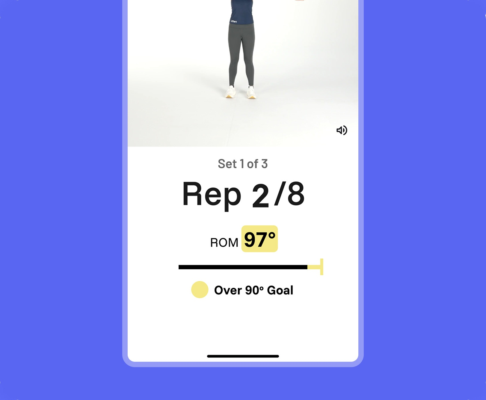
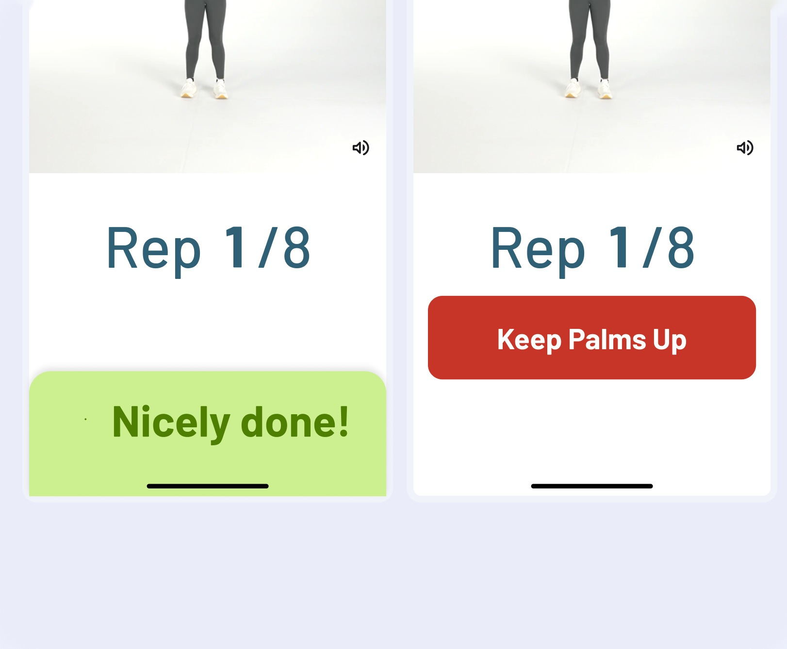
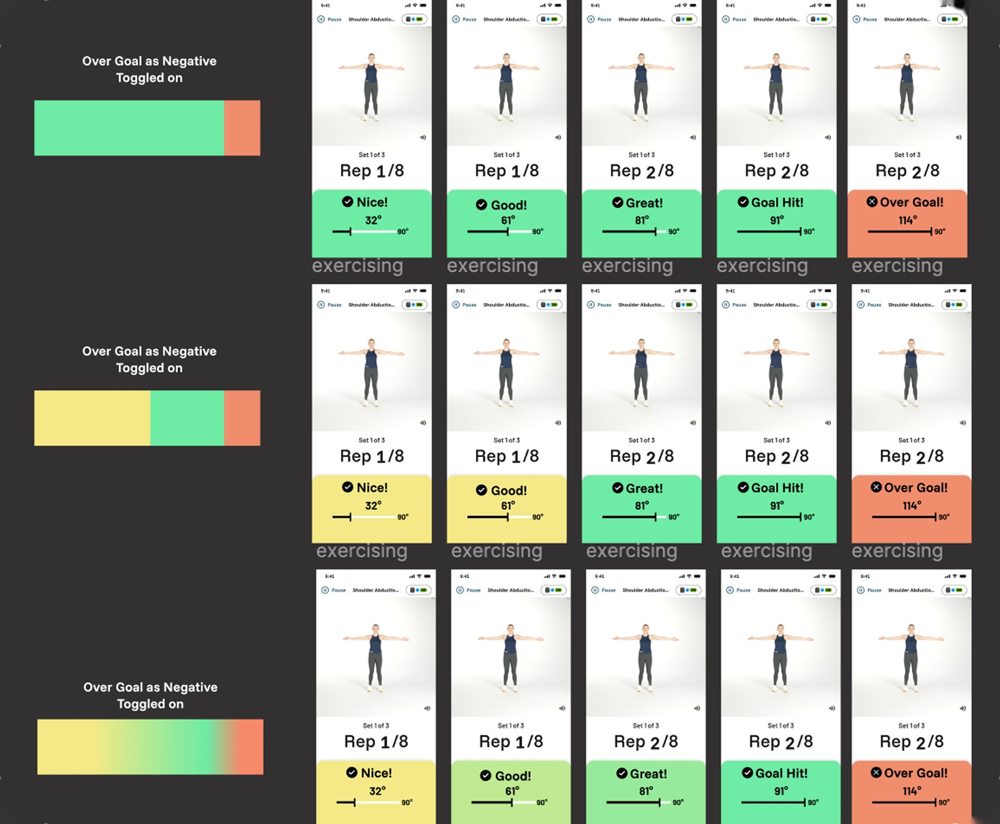
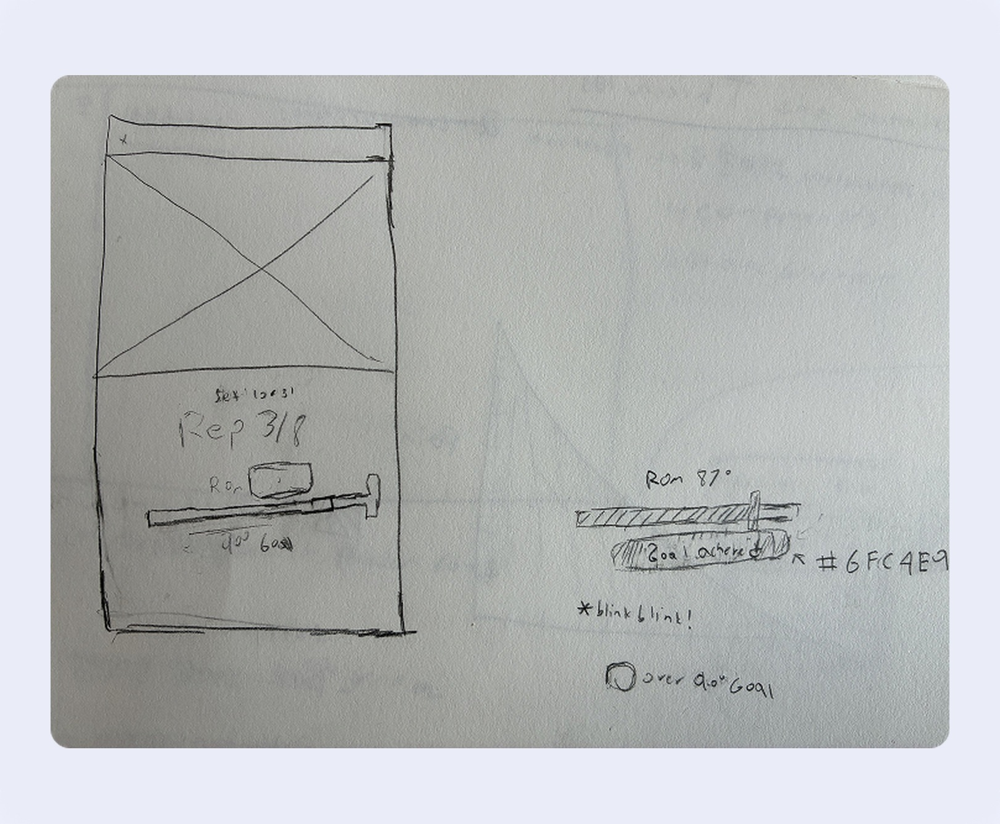

UGen Health Inc
2026Product Designer1 month
UGen Health is a rehabilitation technology start-up combining intelligent motion sensors with real-time software corrections to help patients and athletes recover faster with perfect exercise form. In this project I focused on how to make this relationship between robotics, information and movement as natural as possible.

UGen’s sensors were sending data to their application at a few key points in a patient’s rep, and yet we were only communicating to the patient an integer and a confirmation. I felt the existing solution left patients and athletes in the dark about multiple key data points that could vastly affect their recovery.

One concept I explored used color to communicate the quality of each rep at a quick glance. However, since UGen’s software side is registered as a general wellness product, and in theory cannot make claims to the patient about their health, we explored how a gradient of color changes the liability claims over preset thresholds. It’s really interesting how such slight visual changes can have broad impacts on what a product is communicating.

After testing a prototype on a few coworkers, I realized several pieces were communicating the same thing, and I brought my team together to brainstorm a more elegant solution.
By the end of the sprint our key and most memorable experience evolved from coaching with a few interstitial moments to a fluid, data-rich journey. This exploration also unveiled new applications of our product, now enabling us to communicate the over-extension of a rep, covering a common rehab error costing the US healthcare system upwards of $2.7 billion annually.